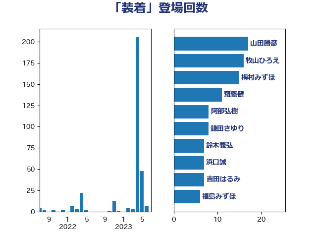

単語「装着」

| 山田勝彦 | 立憲民主党 | 17 回 |
| 牧山ひろえ | 立憲民主党 | 16 回 |
| 梅村みずほ | 日本維新の会 | 15 回 |
| 齋藤健 | 自由民主党 | 11 回 |
| 阿部弘樹 | 日本維新の会 | 8 回 |
| 鎌田さゆり | 立憲民主党 | 8 回 |
| 鈴木義弘 | 国民民主党 | 7 回 |
| 浜口誠 | 国民民主党 | 7 回 |
| 吉田はるみ | 立憲民主党 | 7 回 |
| 福島みずほ | 社会民主党 | 6 回 |
| 務台俊介 | 自由民主党 | 5 回 |
| 佐々木さやか | 公明党 | 5 回 |
| 高木かおり | 日本維新の会 | 4 回 |
| 西村康稔 | 自由民主党 | 4 回 |
| 林芳正 | 自由民主党 | 4 回 |
| 仁比聡平 | 日本共産党 | 4 回 |
| 谷公一 | 自由民主党 | 3 回 |
| 漆間譲司 | 日本維新の会 | 3 回 |
| 庄子賢一 | 公明党 | 3 回 |
| 舩後靖彦 | れいわ新選組 | 2 回 |
| 石井正弘 | 自由民主党 | 2 回 |
| 沢田良 | 日本維新の会 | 2 回 |
| 本村伸子 | 日本共産党 | 2 回 |
| 日下正喜 | 公明党 | 2 回 |
| 小池晃 | 日本共産党 | 2 回 |
| 友納理緒 | 自由民主党 | 2 回 |
| 高階恵美子 | 自由民主党 | 1 回 |
| 高橋光男 | 公明党 | 1 回 |
| 西村明宏 | 自由民主党 | 1 回 |
| 福山哲郎 | 立憲民主党 | 1 回 |
| 田村智子 | 日本共産党 | 1 回 |
| 浅田均 | 日本維新の会 | 1 回 |
| 東国幹 | 自由民主党 | 1 回 |
| 杉久武 | 公明党 | 1 回 |
| 木村英子 | れいわ新選組 | 1 回 |
| 斉藤鉄夫 | 公明党 | 1 回 |
| 後藤茂之 | 自由民主党 | 1 回 |
| 岸田文雄 | 自由民主党 | 1 回 |
| 山口壯 | 自由民主党 | 1 回 |
| 寺田静 | 無所属 | 1 回 |
| 大岡敏孝 | 自由民主党 | 1 回 |
| 塩川鉄也 | 日本共産党 | 1 回 |
| 國重徹 | 公明党 | 1 回 |
| 吉田宣弘 | 公明党 | 1 回 |
| 加藤勝信 | 自由民主党 | 1 回 |
| 仁木博文 | 無所属 | 1 回 |
| 串田誠一 | 日本維新の会 | 1 回 |
| 中野洋昌 | 公明党 | 1 回 |